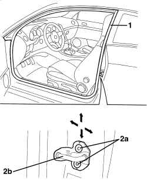

7005A10 FRONT SIDE DOOR - ADJUST STRIKER AND ADAPT SEAL IF NECESSARY
- Path
- Procedures > 70 FITTINGS > 7005 PASSENGER COMPARTMENT FRONT SIDE DOORS > 7005A FRONT DOOR ASSEMBLY > 7005A10 FRONT SIDE DOOR - ADJUST STRIKER AND ADAPT SEAL IF NECESSARY
- Kind
- repair procedure (removal / refitting; the operation number is the code)
- Applies to
- all engines; all production periods
- Interactive page
- https://sloeber94.github.io/elrnDB-aBrrSpdr/en/#/946002490
Applies to: all engines; all production periods
 Removing
Removing
 Refitting
Refitting- Open the front door.
1. Check that the door seal is not damaged along its perimeter, otherwise replace.
2. If necessary, align the bolts (2a) and move the lock striker (2b) to the correct position using the slotted bolt holes. The arrows indicate the possible movements for the adjustment.
Tighten the bolts (2a) to the specified torque.
Component | Fastening | dia | Value (daNm) | Validity |
|---|---|---|---|---|
DOOR LOCK STRIKER | Bolt | M8x20 | 2.2÷ 2.6 |

Applies to: all engines; all production periods
- Check that the stiker and the door lock are correctly matched and that the alignment is correct with the door closed.
- If necessary,
Op. 7005M25 FRONT SIDE DOOR ELECTRICALLY OPERATED WINDOW MECHANISM - CHECK POSITION AND FASTENING